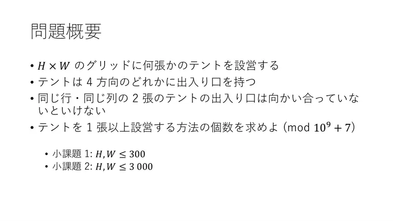
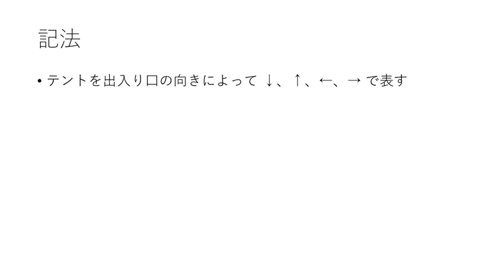
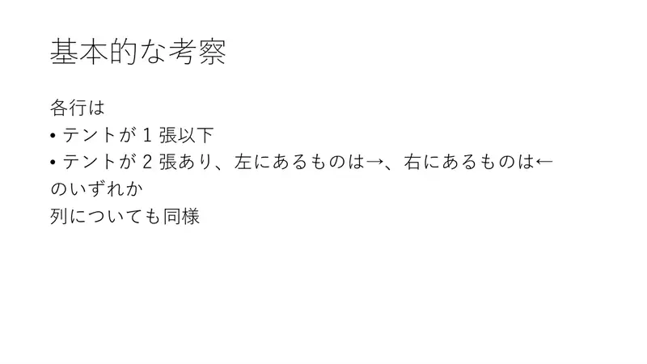
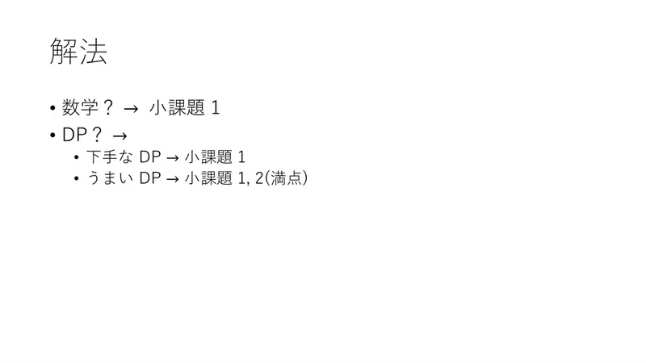
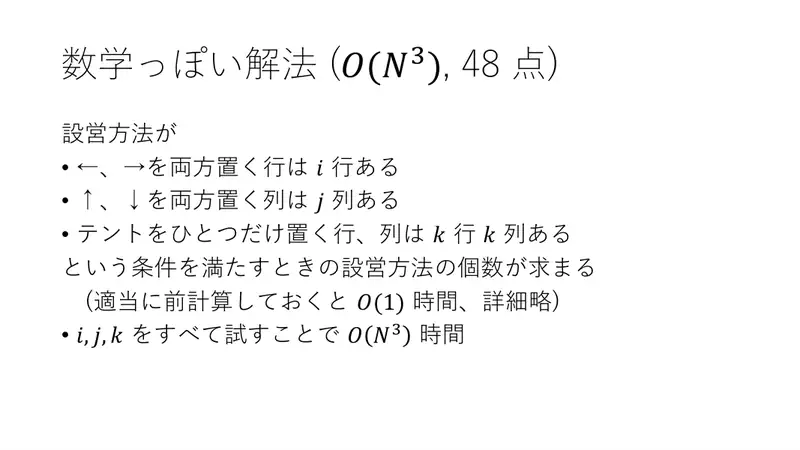
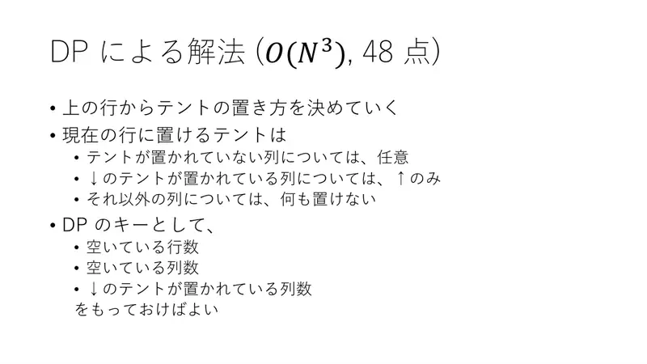
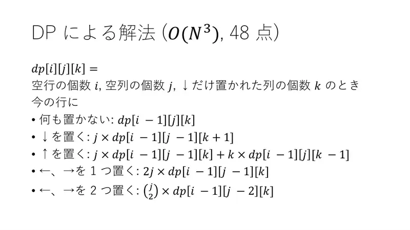
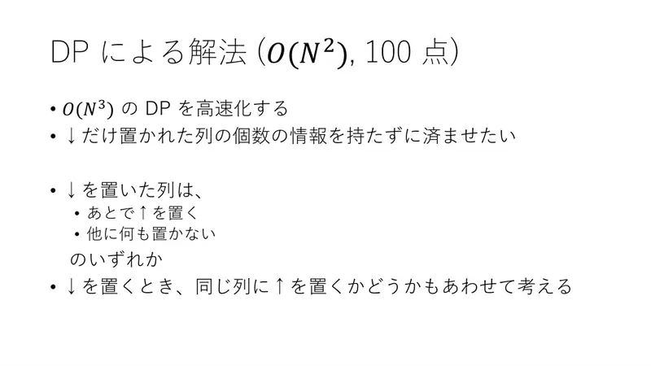
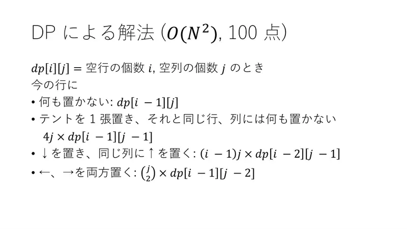
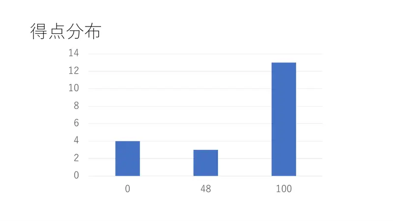

Analiza rješenja · JOI Spring Camp 2018 · Dan 1
Šatori
O ovom članku
Tekst je prijevod službene japanske prezentacije rješenja, preoblikovan u članak. Slajdovi su ugrađeni kao slike; natpis pod svakim slajdom je prijevod teksta na njemu. Dijelovi označeni kao trenerska napomena nisu u izvornoj prezentaciji — dodani su da popune korake koje slajdovi preskaču ili samo skiciraju.
Slajdovi
Zadatak
izvorni slajdovi 1–4
-
1Naslov; Mitani Yo. -

2Rešetka, šatori s ulazom; u istom retku/stupcu ulazi okrenuti jedan drugome; broj načina mod $10^9+7$; podzadaci 300 / 3000. -

3Oznake ↓↑←→. -

4Svaki redak: $\le1$ šator, ili točno 2 s →←; isto stupci.
← → tipke ili klik na sliku
Rješenja
Koraci algoritma
Od kombinatorike do $O(N^2)$ DP-a
izvorni slajdovi 5–10
-

5Matematika → 48; loš DP → 48; dobar DP → 100. -

6Kombinatorički $O(N^3)$: broj redaka s parom, stupaca s parom, usamljenih; formula u $O(1)$ po $(i,j,k)$. -

7DP redak po redak s ključem (prazni redci, prazni stupci, stupci s ↓ koji čekaju ↑). -

8$dp[i][j][k]$ prijelazi: ništa; ↓ ($j\cdot dp[i-1][j-1][k+1]$); ↑ ($j\cdot dp[i-1][j-1][k]+k\cdot dp[i-1][j][k-1]$); jedan ←/→ ($2j$); par →← ($\binom j2$). -

9$O(N^2)$: izbaci $k$ — stupac s ↓ ili dobije ↑ kasnije ili ništa; odluči odmah. -

10$dp[i][j]=dp[i-1][j]+4j\,dp[i-1][j-1]+(i-1)j\,dp[i-2][j-1]+\binom j2 dp[i-1][j-2]$.
← → tipke ili klik na sliku
Slajd
Statistika
izvorni slajd 11
-

110 / 48 / 100.
Sažetak
- Šatori su usamljeni ili u paru; parovi troše retke/stupce.
- $dp[i][j]$ po recima, četiri prijelaza, $O(HW)$; odgovor $dp[H][W]-1$.